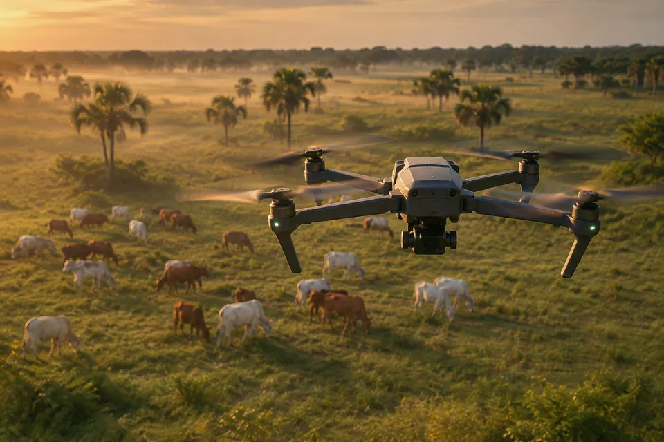
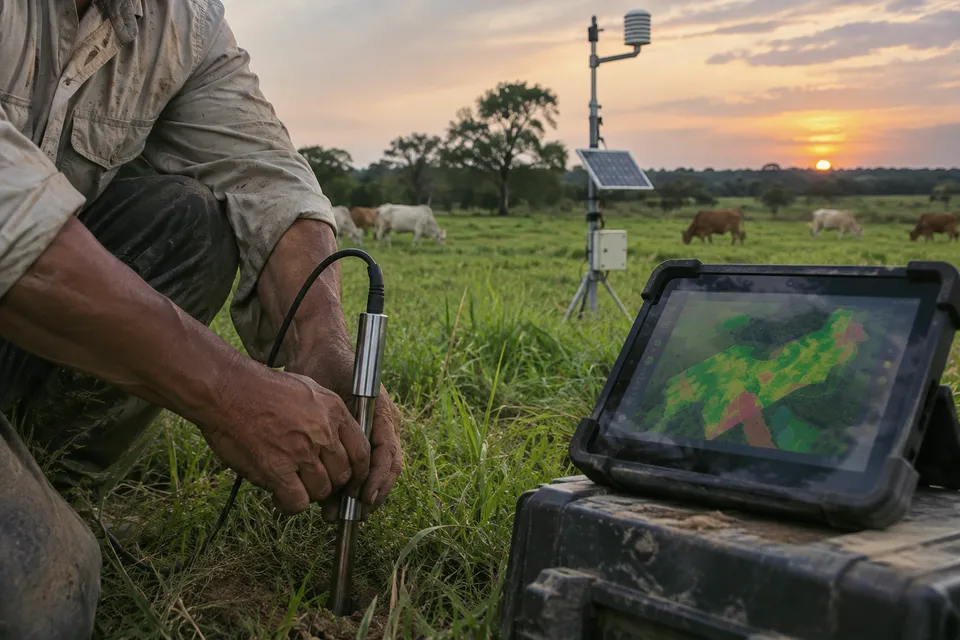

Llanos Orientales · Santander
El futuro de la ganadería comienza en el campo.
Tradición que evoluciona. Inteligencia que produce.
02 · Nuestra esencia
Conocimiento que se construye generación tras generación.
Detrás de cada animal hay oficio: leer el pasto, el clima y el comportamiento del hato. Es un saber que se aprende en el trabajo diario y sobre el que construimos todo lo demás.
-

Razas
Brahman, cebú y sus cruces: ganado de origen índico, hecho para el calor, la humedad y las pasturas tropicales. Rústico y de temperamento manejable.
-

Monitoreo aéreo
Vuelos con dron para ver el hato y los potreros desde el aire: fotogrametría, mapas del terreno y seguimiento del estado de las pasturas.
-

Agrotecnología
Análisis y sensores de suelo para mejorar su fertilidad, optimizar las pasturas y decidir con datos qué sembrar, cuánto cargar y cuándo rotar.

03 · Nuestra visión
Producir mejor también significa decidir mejor.
La experiencia ya no basta por sí sola: producir mejor exige planificar, medir y ajustar cada decisión con información.
-
01
Planificar
Anticipar cada ciclo productivo, del potrero al mercado.
-
02
Medir
Registrar lo que pasa en el campo para entenderlo.
-
03
Mejorar
Corregir el rumbo con datos, no solo con intuición.
04 · Inteligencia ganadera
La inteligencia del campo está en comprender cada variable.
Territorio, productividad, información, indicadores y finanzas no son temas separados. Entender cómo se relacionan es lo que permite decidir mejor.
- Centralización de datos
- Optimización
- Rendimiento
- Eficiencia de recursos
- Trazabilidad
Mejores decisiones
Estamos construyendo las herramientas para lograrlo.

05 · Nuestro propósito
Una nueva perspectiva para el desarrollo ganadero.
Del llano a la montaña, creemos en una ganadería que crece con su territorio: más eficiente, mejor informada y comprometida con las regiones donde trabaja.
GANAGÁN. Tradición que evoluciona.
Contáctenos
Hablemos.
Déjenos sus datos y nos pondremos en contacto.